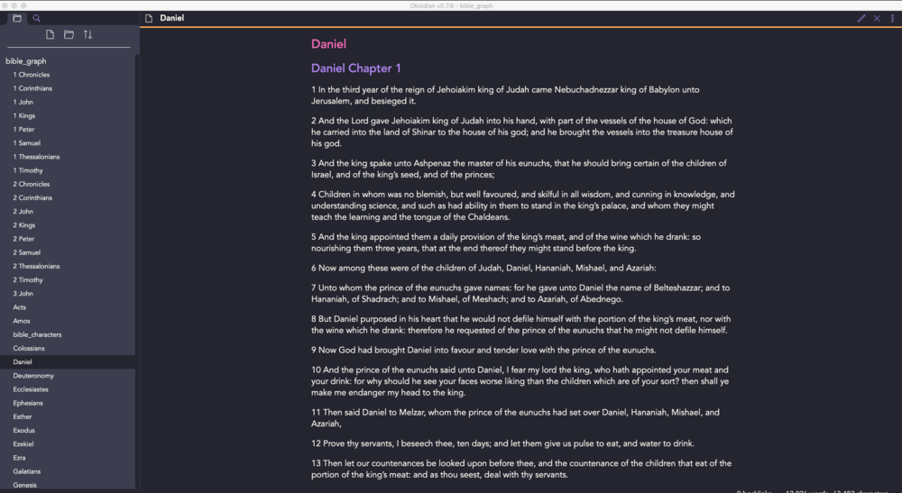
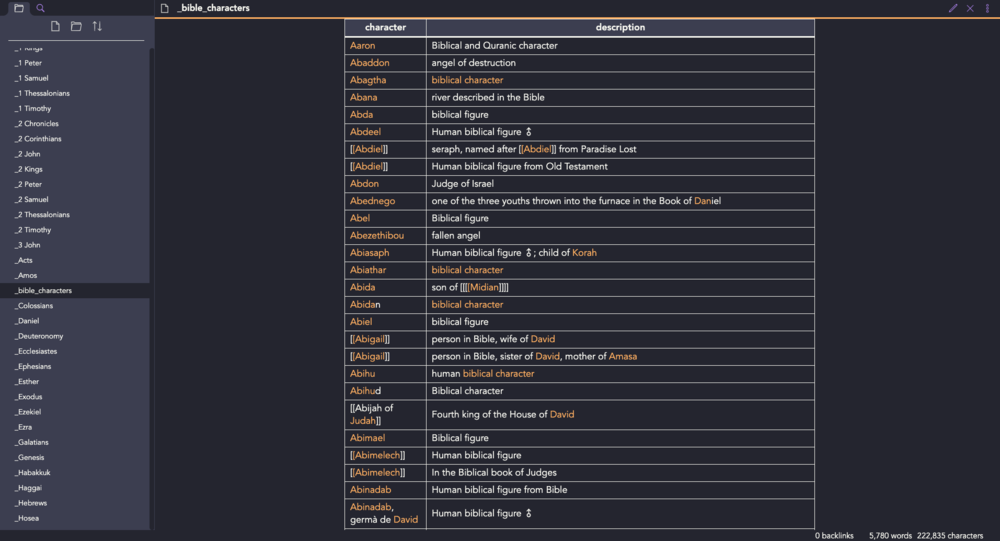
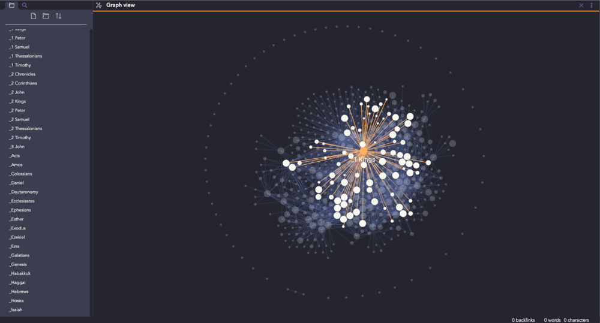

Executive Summary
- Graph databases treat data and relationships between data as equals
- Graph databases can be used to create ‘knowledge graphs,’ which are basically digital versions of the charts detectives make in murder mystery shows
- There aren’t a lot of business-friendly options for making knowledge graphs in the market right now
- I used Obsidian.md to make a knowledge graph of the Bible. It was a successful, easily repeatable experiment
- Business could easily recreate this experiment with their own data, especially their Salesforce notes
Context
Think of the last murder mystery you watched. Chances are the lead detective created some complicated ‘murder board’ with pictures of all the suspects, evidence, and yard connecting it all. Something like this….
In the data science world, these ‘murder board’ style charts are derived from ‘Graph Databases’ and are often called ‘Knowledge Graphs.’ These graphs are somewhat of a frontier in data science right now. There is an obvious business case behind having a capability to map customer data like this. But there are no obvious, business friendly solutions right now.
To be clear: there are, indeed, solutions towards building a graph database. Government agencies seem to be smitten with Palantir (OK, but extremely expensive). There are also groups like Neo4J who are making huge strides in advancing graph technology. Even Amazon is leaning into this with Neptune, a pretty mature graph database service. (Of course, its Amazon after all…)
The main problem with the current graph database solutions is in setting them up and managing them. Simply put: it’s not a business friendly process. Setting up a graph database requires data engineer expertise that most small and medium businesses do not have. And for firms large enough to have this kind of talent on staff, their engineers are usually so busy that they don’t have the bandwidth to set everything up and explain it to the business owners.
The Approach for this Project
Since the COVID pandemic, I’ve been focused on thrifty, inexpensive ways small and medium business can leverage data science. That’s what was done here, but focused specifically on how a small/medium business could build a usable knowledge graph.
To accomplish this, I did some research on emerging tools and discovered Obsidian.md. Obsidian is a tool you can add on top of a folder to manage the markdown files within that folder. But it also has a super cool knowledge graph capability, whereby you can tag items in the files and see the commonalities between those files.
With Obsidian being free for personal use, and only $50 for commercial accounts, I thought this would be a cheap and business-friendly way to ‘hack’ a knowledge graph. To test our hypothesis, we downloaded all of the chapters in the Bible (in markdown format). I then looked up a list of all the characters in the Bible and made it a .csv file. Lastly, we wrote a super-short script to read through each book of the bible and tag all the characters. The whole thing only took an evening and the end result was a really impressive graph database of the entire Bible.
Below are the steps taken for this demo. Before reading further, however, I do wish to make it clear that this not at all any form of a sponsored piece from Obsidian. I’ve never even spoken with the folks at Obsidian. I must admit, however, that I was super impressed with the work that team is doing and now use their tools ourselves. If anyone at Obsidian is reading this…. Keep up the great work! Awesome stuff!
Steps
- Downloaded Obsidian.md
- Downloaded a markdown version of the bible, courtesy of Arley McBlain
- Made a .csv file from a list of all the characters in the Bible
- Wrote a short python script to read through all the books of the Bible and tag all the characters
- Added a ‘Dracula’ custom styling theme for fun, courtesy of jarodise
- Voila! Knowledge graph complete!
What I Like About This Approach
Sure, this is kind of a ‘hack.’ But who cares? It’s a cheap and easy way to set up a knowledge graph capability, especially at a small or medium business. Plus, there are somethings I really like about this approach.
Obsidian makes it super easy to search, access, and edit the markdown files themselves. This means any business user could take ownership of the knowledge graph and update links, add notes, etc.
It is simple to use this to make a data dictionary (a list of all the terms in the directory and what they mean).
The graphs themselves are simple, clean, and user-friendly. (Bravo, Obsidian)
The graphs are also dynamic. Meaning you can grab a node and pull it away from the rest of the notes so it’s easier to explore. When you do, the rest of the graph updates in real-time.

Lastly, it’s quite easy to pick between pre-formatted styles, and even create your own style if you want. And while formatting/styles might sound insignificant, it goes a long way to show how much attention to detail is being given to this product. And besides – who doesn’t enjoy using well designed tools?
Things I Wish I Could Change
There honestly, isn’t a lot to add here. Not when one considers how accessible this capability is anyhow.
The main gripe is that there is no ability to search the knowledge graph. In its current state, a user can only search the files themselves. This isn’t the end of the world, but it certainly makes the Obsidian’s graph feature less usable (especially after there are a few hundred notes and connections).
It is also unclear what the difference is between Obsidian’s ‘Catalyst’ and ‘Commercial’ plans (besides price). I’m sure there is, indeed, a difference, but it wasn’t clear when I first landed on the webpage. Either way, both plans are cheap enough for any business to afford.
Implications
This study was done using the Bible for personal reasons and because I thought it would be fun. But there is no reason why a business couldn’t recreate this study using their own data. CRM data, in particular, seems like an obvious use case.
It wouldn’t be a stretch for a small company to export all their salesforce account data, for instance, and read each row in to a markdown file. They could even add in contacts, interaction notes, etc. as markdown files as well. Once complete, they could create a list of all the names, locations, and events in their Salesforce data and repeat this process. The end result would be a compelling knowledge graph that could yield actionable intelligence about a firm’s current customer base. Admittedly, this isn’t the most sophisticated solution, but it would certainly work!